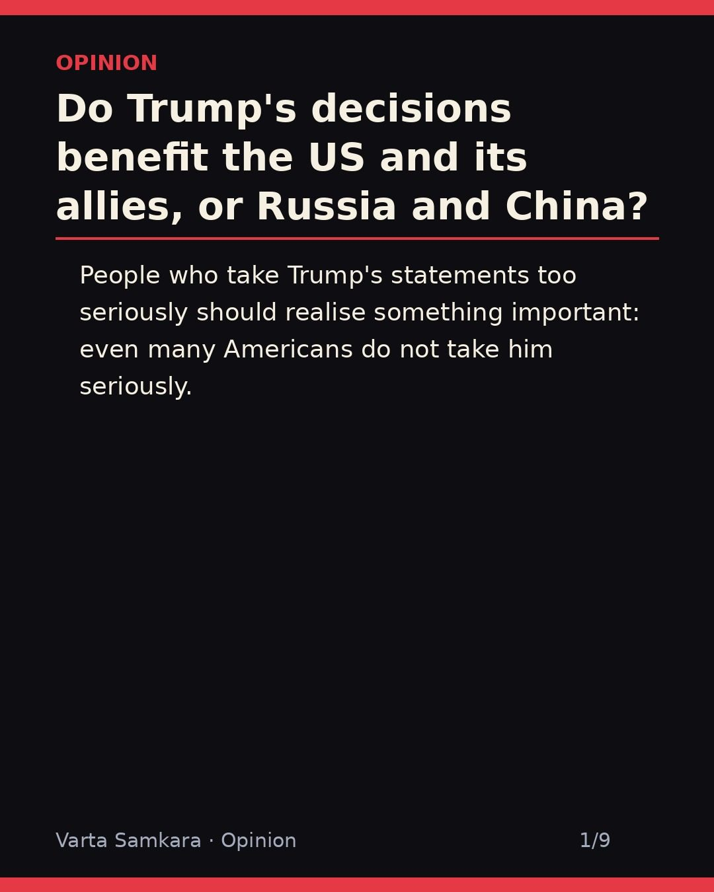
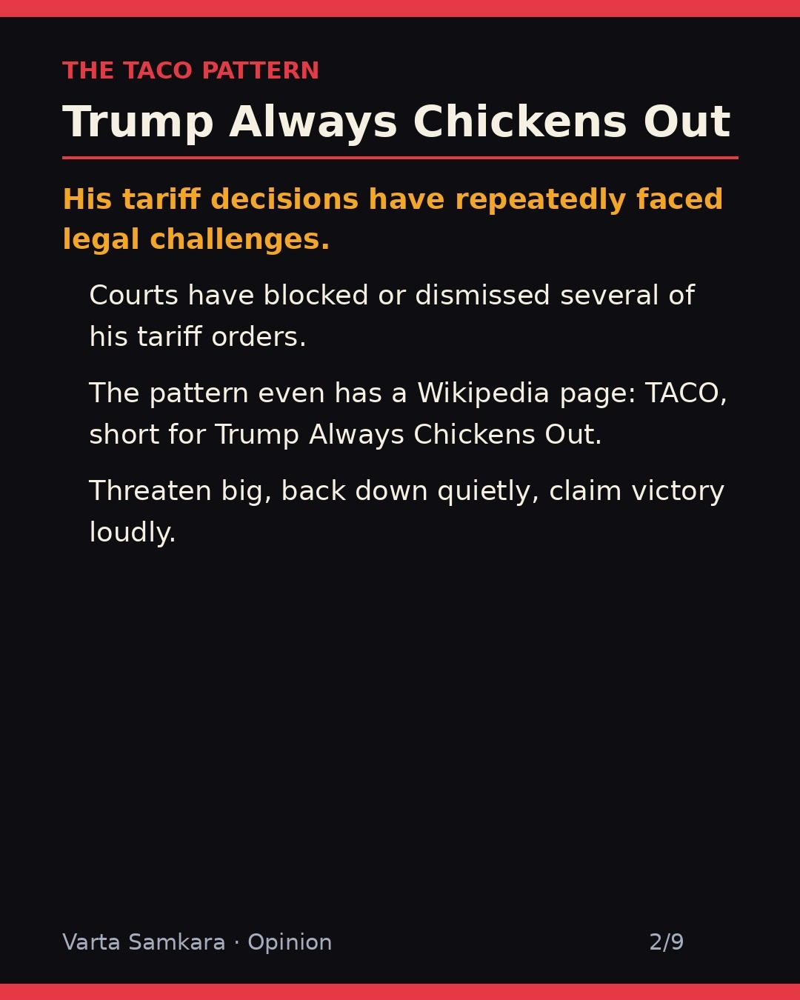
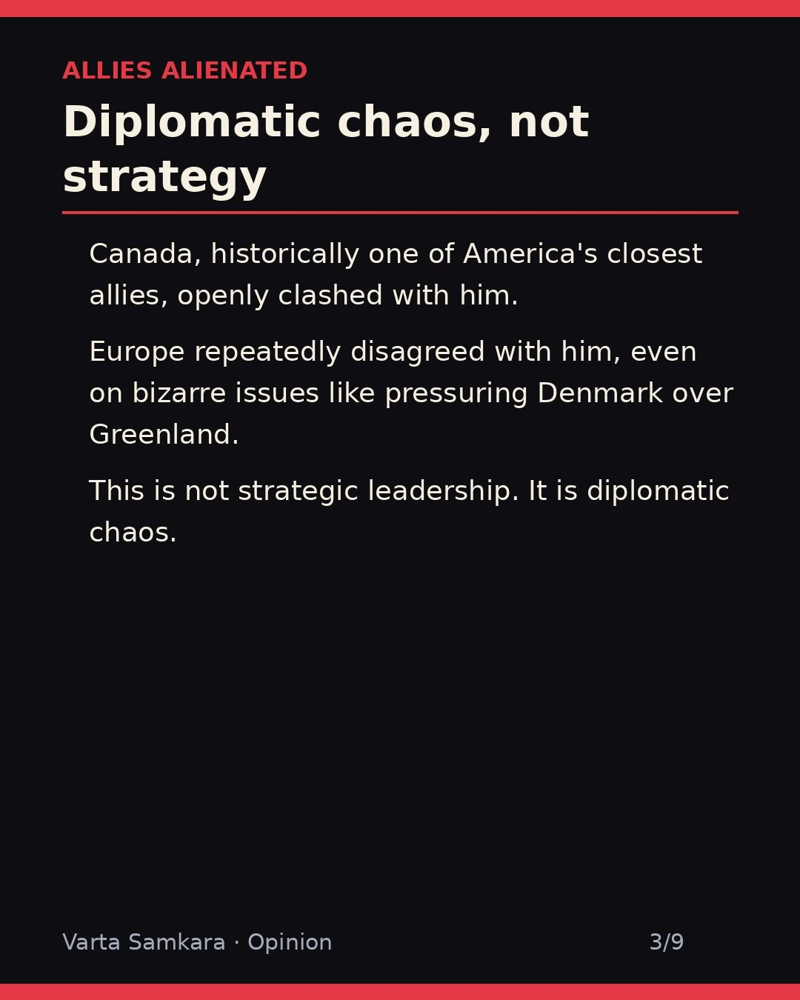
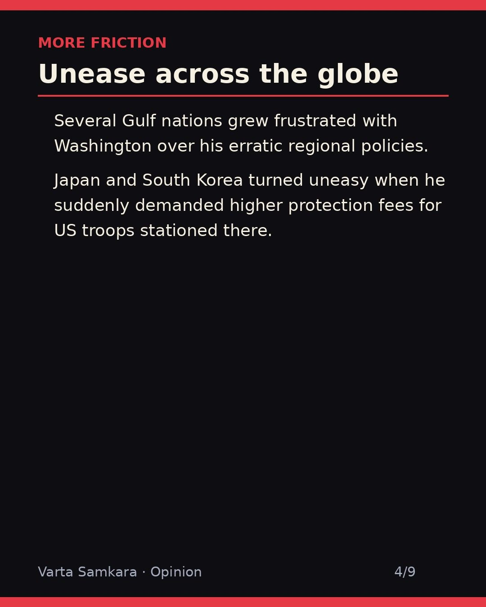
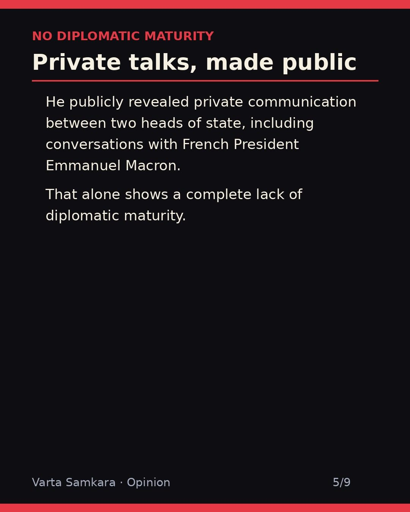
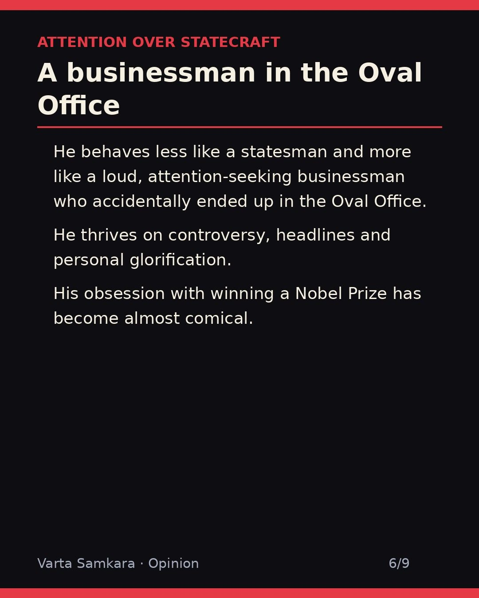
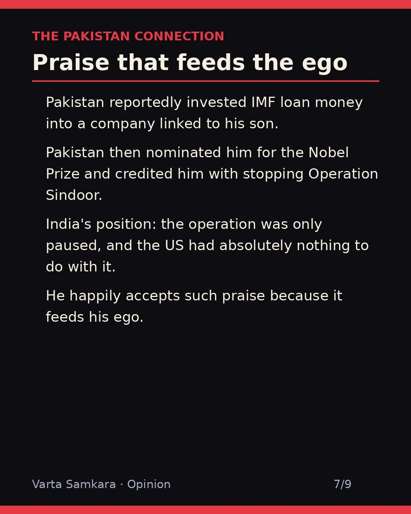
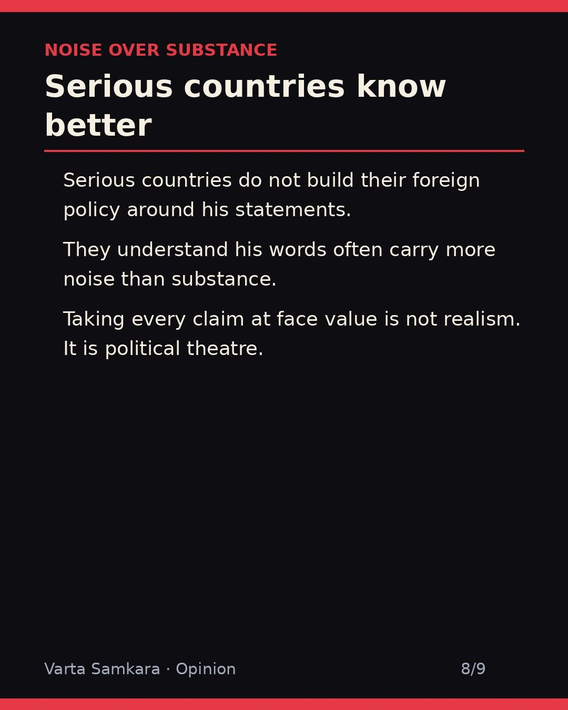
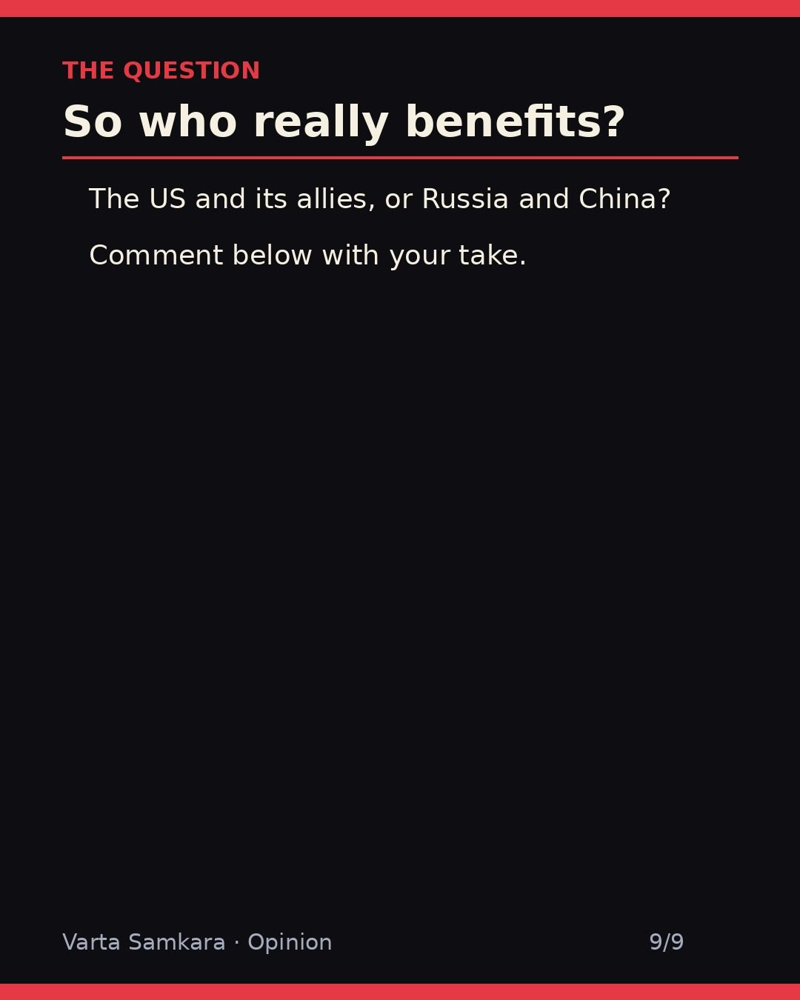

Opinion
OPINION | Do Trump's decisions benefit the US and its allies, or Russia and China?

Do Trump's decisions benefit the US and its allies, or Russia and China? It is a question worth asking seriously, because the answer is not as obvious as either side pretends.
Strip away the noise and look at the pattern of outcomes, not the volume of announcements. What has actually happened as a result of his decisions?
Tariffs that do not survive contact with the courts
His tariffs keep getting blocked in court. This is the signature policy, the one everything else is built around, and it keeps running into judges. A trade weapon that cannot survive legal scrutiny is not a strategy. It is a press release with extra steps.
And notice what the tariff chaos does to everyone else. Businesses cannot plan, supply chains cannot settle, and allies cannot tell whether the threat of the week is real or theater. Uncertainty is itself a cost, and America is exporting it to its own friends.
Allies on edge
Allies from Canada to Europe to Japan are uneasy. That unease is not partisan spin. When private conversations with leaders like Macron get aired in public, every other leader updates their mental model: nothing said in confidence stays in confidence. Diplomacy runs on trust, and trust runs on discretion. Remove discretion and you do not get better deals. You get quieter partners who start making backup plans.
Canada, Europe, Japan, these are not adversaries to be squeezed. They are the core of the American alliance system. A foreign policy that treats allies as an audience and adversaries as a negotiation is playing the game backwards.
The Nobel obsession
And the Nobel Prize obsession keeps growing. It would be funny if it were not diagnostic. Statesmen do not campaign for prizes. The hunger for the medal reveals the motive behind the moves: not the outcome of the policy, but the credit for it.
Meanwhile Pakistan nominates him for the Nobel and credits him with stopping Operation Sindoor, which India says was only paused, with no US role at all. When your biggest fans are the ones with the most transparent motives, it tells you something about the company your policies keep.
Who actually benefits
So who benefits? Not the American consumer, who pays the tariffs that survive. Not the allies, who are busy hedging. Not the cause of stability, which takes a hit every time private diplomacy becomes public content.
Russia and China benefit. Every crack in the Western alliance is an opening. Every tariff war between friends is a gift to the rivals watching from the sidelines. Every time Washington spends its energy fighting Ottawa or Brussels, Beijing and Moscow get to operate with less pressure. You do not need to believe in a grand plan to see the pattern. Just follow the incentives.
Noise over substance
Serious countries don't build foreign policy around his statements. That is the quiet consensus forming in capitals around the world: listen to the noise, watch the actions, and plan for the morning after. Noise over substance.
The tragedy is that America has real leverage, real alliances, and real interests. All of it is being spent on theater. And the audience that applauds the loudest is sitting in Moscow and Beijing.
In pictures








Source: User-authored opinion (TACO/Wikipedia, tariff court blocks, allied friction, Macron revelations, Pakistan Nobel/IMF claims)
Visuals: AI-generated infographic cards
OpinionWorldPolitics#Trump#USPolitics#Geopolitics#ForeignPolicy#India#WorldNews#CurrentAffairs#NATO#Pakistan#OperationSindoor#TACO#Tariffs
See the original reel / carousel with motion graphics on Instagram.
View on Instagram